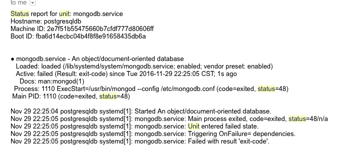

Systemd provee un proceso estandard para controlar que programas son ejecutados cuando inicia un sistema operativo como Linux. Systemd fué creado por Lennart Poettering y Kay Sievers e introducido por RedHat como un estandard que pretende reemplazar los viejos scripts de arranque y parada de servicios. Hoy en dia es utilizado para administrar procesos tan importantes como el journal, el stack de red, job scheduler, login de usarios y muchos otros mas.
Crear nuestros propios servicios es una tarea sencilla, si lo que pretendemos es ejecutar un programa echo en Python, PHP o en cualquier otro lenguaje, solo bastará con crear un script en /etc/systemd/system
myproject.service
[Unit]
Description=uWSGI instance to serve myproject
After=network.target
[Service]
User=user
Group=www-data
WorkingDirectory=/home/user/myproject
Environment=”PATH=/home/user/myproject/myprojectenv/bin”
ExecStart=/home/user/myproject/myprojectenv/bin/uwsgi — ini myproject.ini
[Install]
WantedBy=multi-user.target
Este es un ejemplo de un servicio que levanta una aplicacion hecha en Python y Flask, pero que sucede si este programa por alguna razón falla, bueno siempre tenemos la opcion de colocar en la sección [Service] la siguiente directiva
[service]
Restart=always
RestartSec=3
La cual se encargará de reiniciar el servicio automaticamente en caso de alguna falla en el programa, pero esto no resuelve el problema, necesitamos saber el porqué nuestro programa falla en ocasiones, siempre contamos con la opcion de buscar en el log que sucedió, pero ademas podemos indicarle al servicio que nos avise cuando esto pase y nos envíe los mensajes de error que arrojó la falla.
Como prerequisito necesitamos configurar en este servidor el servicio de envio de correo electronico desde consola, prueba si eso es posible.
[root@tecadmin ~]# mail -s "Test Subject" user@example.com < /dev/null
con Sendmail
[root@tecadmin ~]# sendmail user@example.com < /tmp/email.txt
Comenzamos creando un script para enviar correo electronico /bin/unit-status-mail.sh
#!/bin/bash
MAILTO="administradorsysadmin@gmail.com"
MAILFROM="unit-status-mailer"
UNIT=$1
EXTRA=""
for e in "${@:2}"; do
EXTRA+="$e"$'\n'
done
UNITSTATUS=$(systemctl status $UNIT)
sendmail $MAILTO <<EOF
From:$MAILFROM
To:$MAILTO
Subject:Status mail for unit: $UNIT
Status report for unit: $UNIT
$EXTRA
$UNITSTATUS
EOF
echo -e "Status mail sent to: $MAILTO for unit: $UNIT"
Importante asignarle derechos de ejecucion chmod +x /bin/unit-status-mail.sh
Ahora crearemos un servicio llamado unit-status-mail@.service que va a consumir el script anterior
[Unit]
Description=Unit Status Mailer Service
After=network.target
[Service]
Type=simple
ExecStart=/bin/unit-status-mail.sh %I "Hostname: %H" "Machine ID: %m" "Boot ID: %b"
y finalmente en el script del servicio que queremos monitorear, colocarmos en la seccion de [Unit]
myproject.service
OnFailure=unit-status-mail@%n.service
Actualizamos los cambios
sudo systemctl daemon-reload
y reinciamos el servicio que vamos a monitorear, en este ejemplo es myproject.service
sudo systemctl restart my-upmyproject
Este es un ejemplo del correo que nos llegará cuando ocurra algun error, en este caso es un servicio del servidor de MongoDB
